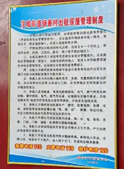

1.1.1. 阁老门村
- 村南侧是汉城湖景区，看起来修得很好，但据当地居民所言人流量并不大，经济效益也不明显，“主要是没啥吸引人的地方”。
- 据当地居民所言，这里是相当典型的城中村，绝大多数本地居民靠出租房营生并且获利不少。
这里空房率低于扬善村，租住的劳动者较多。

- 该村卫生条件相对较好，街道也较为宽敞。
- 这里的房租相较西扬善村高一些，同时住宿条件也相对较好。
（二刺螈探头） - 我们推测这里租住的工人以收入来源较稳定者为主。
- 其他城中村的特点也基本具备，特别是药店中有很多治疗跌打扭伤等的药物售卖。
- 推测其主要受众也是体力工人，特别是建筑工（据调研这一群体在租住者中占比较大）。